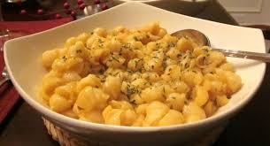

MACARONI CHEESE
Home

A tasty Macaroni Cheese
This is the result of a quick and easy mac and cheese recipe that everyone can enjoy
Ingredients
- Garlic Bread
- 2 tbsp butter
- 350g of pasta, your choice what kind
- 3 tbsp plain flour
- 500ml milk
- 500g of cheese, can be 500g of 1 cheese or split it between different cheese's
Steps
- Heat the oven to 200C
- Boil the pasta until it's nearly cooked then drain, feel free to add a pinch of salt before boiling the pasta
- Meanwhile, melt the butter in a pan. add milk gradually along with the flour while whisking until you have a lump-free sauce
- Simmer for 5 minutesm whisking all the time until thickened then mix in half of your grated cheese
- Once that's done, pour the cheese sauce into the pasta
- fill your chosen dishes with the pasta and cheese sauce mix and top with the rest of your grated cheese
- Stick your dishes in the oven until you have a nice crispy brown ish cheese top
- put the garlic bread in the oven at the same time as the macaroni cheese
- 10 to 20 minutes later they should be ready to enjoy